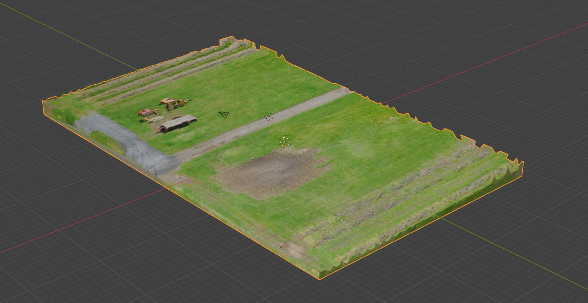
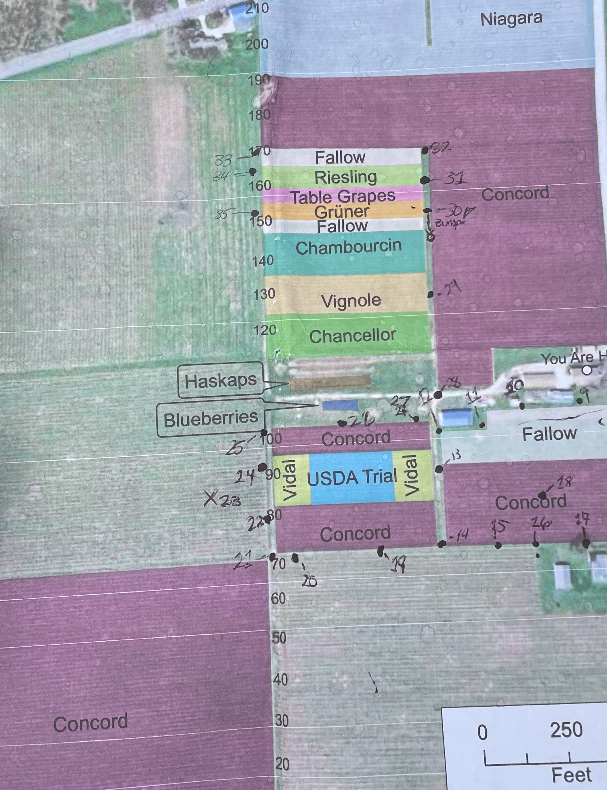
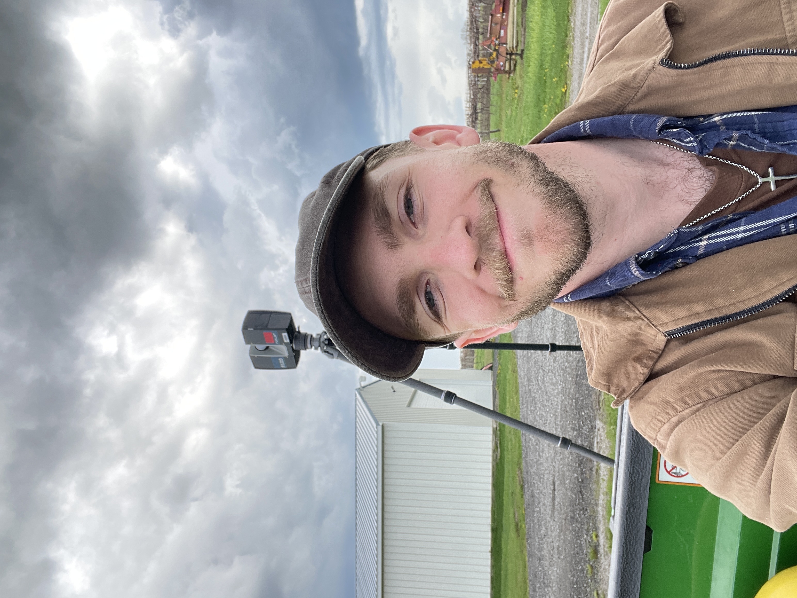

As part of a collaboration through the VAR Lab, this project involved the large-scale 3D scanning of approximately 40 acres of grape vineyards in association with the Penn State Grapevine Extension. The goal of the work was to create accurate terrain and surface data to help identify low-lying areas prone to water pooling and flooding.
The survey combined drone-based photogrammetry for aerial coverage with FARO Focus S terrestrial laser scanning to capture high-precision ground-level detail. Together, these datasets enabled a comprehensive view of elevation changes across the vineyard, supporting agricultural analysis and environmental planning.
This project demonstrates how mixed-method 3D scanning workflows can be applied beyond cultural heritage and visualization, serving practical needs in agriculture, land management, and environmental assessment.

